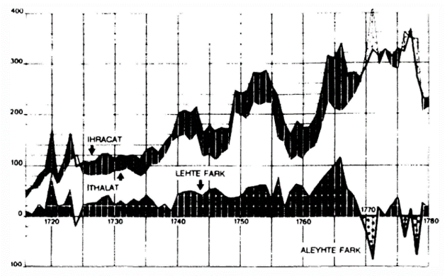
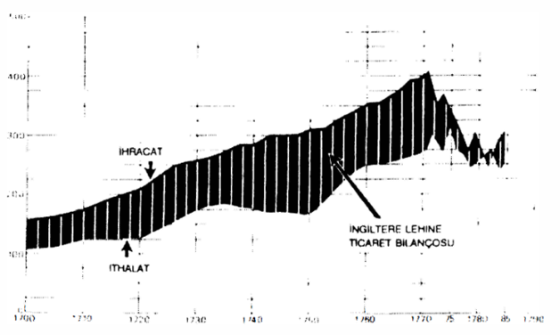
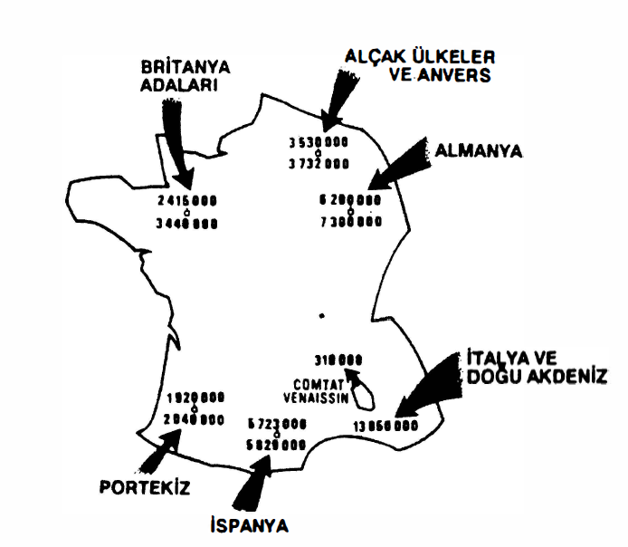

Burada söz konusu olan, kelimenin klasik anlamındaki ulusal pazarı incelemek değildir. Bu pazar, ülkesine göre oldukça yavaş ve eşitsiz bir şekilde gelişmiştir. İzleyen ciltte bu ilerlemeli, ama XVIII. yüzyılda henüz tamamlanmamış olan ve modern devleti kuran bu oluşumun üzerinde uzun uzadıya duracağız.
Şu an için, dolaşımın, geri kalmış veya ilerleyen çeşitli ulusal ekonomileri (ulusal pazarlardan söz etmemek için bu terimi kullanıyoruz) nasıl karşı karşıya koyduğunu, onları nasıl zıtlaştırdığını ve tasnif ettiğini göstermekten başka bir şey istemiyoruz. Eşit ve eşitsiz mübadele, trafiklerin denge ve dengesizliği, egemenlik veya kulluk, genel bir dünya haritası oluşturmaktadırlar. Bu haritadan hareketle, ticaret dengesi, bir ilk bütünsel taslak çizmeye olanak vermektedir. Bu, soruna yaklaşmanın en iyi veya tek yolu değildir, ama uygulamada tek sahip olduğumuz rakamlar bunlardır. Üstelik bunlar ilkel ve eksiktir.
Belli bir ekonominin ticaret dengesi, bir bakıma bir tüccarın yıl sonu bilançosu gibi bir şeydir: kazanmış veya kaybetmiştir. Sir Thomas Smith’e atfedilen Discours of the common Weal of this Realm of England'da (1549) şunlar okunmaktadır: “yabancılara sattığımızdan daha fazlasını onlardan satın almamaya her zaman özen göstermeliyiz”. Bu cümle, denge konusunda bilinmesi gereken, belki de hep bilinen esas şeyi söylemektedir. Çünkü, bu bilgelik yeni değildir. Örneğin, 1549’dan çok önceleri, İngiliz tüccarlar, dışarıda yaptıkları fazla veren satışlarının bir bölümünü İngiltere’ye sikke olarak getirmeye, hükümet tarafından zorlanmakta değiller midir? Yabancı tüccarlar da kendi cephelerinden, satışlarının ürününü, adayı terketmeden önce, İngiliz malına dönüştürmek zorundadırlar. Thomas Mun’un 1621’de yazdığı, Discourse of Trade...'i aslında doğru olan ve bilinçlenme belirleyen bir denge tanımı vermektedir. Onun çağdaşı olan Edward Misselden, 1623’te “Wee feel it before in sense; but now wee know it by science" (eskiden onu hissediyorduk, ama şimdi bilimsel olarak biliyoruz) diyebilmiştir. Tabii ki burada, eşanlı bir dizi dengeyi (ticaret, hesap, emek-gücü, sermaye, ödemeler) hesaba katan modern kavrayışların çok uzağında, bir başlangıç teorisi söz konusudur. Bu dönemde ticaret dengesi, yalnızca iki ulus arasında mübadele edilen malların değerlerinin tartılması, karşılıklı ithalat ve ihracatın bilançosu veya daha iyisi, karşılıklı borçlardır. Örneğin, “eğer Fransa İspanya’ya 100.000 pistol borçluysa ve İspanya da Fransa’ya 1.500.000 livre ödemek zorundaysa”, bir pistol 15 livre ettiğinden, her şey eşit durumdadır. “Böylesine bir eşitlik çok nadir olduğu için, daha fazla borçlu olan ulusun, karşılayamadığı borçları için değerli maden çıkartması gerekmektedir”. Açık, bir an için kambiyo senetleriyle kapatılabilir, yani ertelenebilir. Eğer borç sürerse, zorunlu olarak değerli maden aktarımı meydana gelecektir. Biz tarihçiler gözleme olanak bulabildiğimizde, işte bu aktarım bizim aradığımız gösterge olmakta ve biri diğeri tarafından, istese de istemese de, maden veya para rezervlerinin bir kısmını elden çıkartmaya zorlanan iki ekonomik birim arasındaki ilişkiler sorununu açıkça ortaya koymaktadır.

Fransa’nın ihracatı ve ithalatı, 1715-1780

İngiltere’nin ihracat ve ithalatı, 1700-1785
Ticaret bilançolarının gösterdiği üzere, İngiltere ve Fransa 1770’ler civarına kadar, dünyanın sırtından olmak üzere rahat bir hayat sürmektedirler. Bu tarihten sonra düşük veya aleyhte farklar ortaya çıkmıştır. Bunun nedeni konjonktür, ticari katipalizmin bir bozulması veya akla daha yakın olarak, “Amerikan” bağımsızlık savaşanın yol açtığı bozulmalar mıdır?
Her merkantilist siyaset, en azından dengeli bir bilançonun peşindedir. Söz konusu olan, her aracı kullanarak, değerli maden çıkışını önlemektir. Örneğin 1703 Ocak-Şubatında, Hollanda’da çarpışan İngiliz birliklerinin iaşesini oradan almak yerine, İngiltere’den “tahıl, mamul ürünler ve başka ürünler gönderilmişse”, bunları karşılayan paralar da “Adada kalmıştır”. Bu fikir, değerli maden ihtiyatlarını kaybetme kaygısına tutulmuş her hükümetin aklına gelebilir. Aynı yılın Ağustosunda, Lord Methuen’in yaptığı antlaşmaya göre, Portekiz’e söz verilmiş nakit katkıyı ödeme durumunda olan İngiltere, bunu tahıl ve buğday göndererek kapatmayı önermiştir; böy- lece “hem yükümlülüklerini yerine getirecek, hem de krallık dışına nakit para çıkartmamış olacaktır”.
“Dengeye gelmek”, ihracat ve ithalatı dengelemek de zaten bir minimumdur. Daha iyisi, lehte bir bilançoya sahip olmaktır. Bu, ulusal zenginlik ile para rezervini özdeşleştiren tüm merkantilist hükümetlerin rüyasıdır. Bütün bu fikirler, oldukça mantıklı bir şekilde, ulusal devletle birlikte ortaya çıkmışlardır. XI. Louis Ekim 1462’de, Roma yönüne olan “külçe ve diğer biçimlerdeki altın ve gümüş çıkışını” sınırlamak ve denetlemek üzere tedbirler almaktaydı.
Ticaret bilançosunun hareketleri -bilindiklerinde- yorumlanmaları her zaman kolay olmayan şeylerdir. Ve her örneğe uygulanabilecek kurallar yoktur. Yani örneğin, İspanyol Amerika’sının bilançosunun, mahkûm olduğu muazzam değerli maden ihracatından ötürü açık verdiğini söyleyemezsiniz. Peder Mercado (1564), bu konuda yanılmamaktadır: “Amerika’nın bütün bu bölgelerindeki altın ve gümüş külçeleri, değeri sıradan malın tabi olduğu aynı nedenlerden ötürü inen ve çıkan bir cins mal olarak kabul edilmektedir”. Ve Turgot İspanya hakkında şöyle bir açıklama getirmektedir: “gümüş onun gıda maddesidir; onu gümüşle değiştiremeyeceği için, gıda maddesiyle değiştirmektedir”. Lehte ve aleyhte olan noktaları tartmadan, Rusya ile İngiltere arasındaki 1786 ticaret bilançosunun Rusya için lehte ve İngiltere için aleyhte olduğunu, çünkü Rusya’nın muhatabından aldığından fazlasını ona sattığını da söylemek mümkün değildir. Fakat John Newman’ın 1786 Ekiminde ileri sürdüğü, bunun tersini de desteklemek olanaksızdır. O sıralarda, Danimarka boğazlarından geçerek, doğrudan Rusya’dan gelen, çok yüklü İngiliz teknelerinin varış limanı olan Hull’de Rus konsolosu olan bu kişi, sorunu kendi gözleriyle görmekte, gördüğünü sanmaktadır. Bilinen ve tartışmaya yer bırakmayan rakamları tekrarlamaktadır: 1785’te Rus gümrüklerinden, İngiltere’ye yönelik olarak 1.300.000 sterlinglik mal çıkmıştır, tersi yöndeki hareketin tutarı 500.000 sterlingtir; II. Ekaterina’nın imparatorluğunun kârı 800.000 sterlingtir. “Fakat buna rağmen, Rusya için bu kârın zahiri ve parasal olduğunu, bu ticaretten kazançlı çıkanın Rusya değil de, sadece (işte aşırıya kaçılan nokta) Büyük Britanya olduğunu hep savundum ve savunuyorum” diye yazmaktadır. Nitekim, mübadelenin devamı düşünülsün, diye açıklamaktadır; “herbiri 300 tonilatoluk” 400 İngiliz teknesi ve “7.000-8.000 denizci” taşımacılığı yürütmekte, bütün bu teknelerin endüstri için gerektirdiği ve sonradan yeniden ihraç edilecek Rus malları İngiliz toprağına ulaşır ulaşmaz fiyat artırmaktadır (%15). Görüldüğü üzere, John Newman, iki ülke arasındaki ticaret bilançosunun bir dizi unsurdan hareketle değerlendirilmesi gerektiğini hissetmektedir. Burada yalnızca modern ticaret bilançosu teorilerinin ilhamını bulmaktayız. Thomas Mun (1621) daha kısa olarak “Hindlere ihraç edilen para, sonunda değerinin beş katını vermektedir” derken, biraz aynı şeyi söylemekte, ama başka bir şeyi de söylemektedir.
Öte yandan, özel bir bilanço ancak ticari bir bütünselliğin içine, aynı ekonominin tüm bilançolarının tam bir toplamının içine yerleştirildiğinde anlamlı olabilir. İngiltere-Hindler veya Rusya-İngiltere gibi tekil bir bilanço gerçek sorunu aydınlatamamaktadır. Bize ya Rusya’nın, ya Hindlerin, ya da İngiltere’nin tüm bilançoları gerekmektedir. Bugün her ulusal ekonomi her yıl dış ticaret bilançosunun, bu yolla oluşturmaktadır.
Bizim açımızdan kötü olan durum, geçmişe ilişkin olarak, yalnızca ülkeden ülkeye, tekil bilançoları bilmemizdir. Bunlardan bazıları klasiktir, diğer bazıları da öyle olmayı haketmektedirler: XV. yüzyılda yün ihracatçısı İngiltere’nin bilançosu İtalya karşısında lehtedir; fakat Flandre karşısında bilançosu lehte olan, bu kez İtalya’dır; Fransa’nın Almanya ile olan bilançosu uzun süre lehte seyrettikten sonra, 1676’da Reichstag tarafından kabul edilen ilk ablukadan itibaren değilse bile, en azından Nantes fermanının iptaliyle (1685) Fransız protestanlarının Almanya’ya gitmeleriyle, Almanya’nın lehine olmuştur. Buna karşılık, Fransa’nın Alçak Ülkelerle olan bilançosu uzun süre lehte kalmıştır ve İspanya ile olanı ise hep lehte kalacaktır. 1700 tarihli resmi bir Fransız belgesi “Limanlarımızda İspanyollara güçlük çıkartmayalım, bu hem özel, hem de genel çıkar için iyidir” demektedir, çünkü “Fransa ile İspanya arasındaki ticaretin avantajı tamamen Fransa tarafındadır”. Daha bir yüzyıl önce, kaba ama gerçekçi bir şekilde, Fransızların “İspanya’yı kemiren bitler" olduğu söylenmekte değil miydi?
Bilanço şurada veya burada oynamakta, hatta yön değiştirmektedir. Bu işaretlere genel bir anlam yüklemeksizin, bilançosunun Fransa’yı 1693’te Piemonte’ye karşı avantajlı kıldığını; 1724’te Sicilya ile Cenova arasındaki bilançonun sonuncunun aleyhine olduğunu; 1808’de bizden bir seyyahın hızlı tanıklığına göre, İran’ın “Hindlerle olan ticaretinin (o sıralar) lehte” olduğunu kaydetmekle yetinelim.
Yalnızca tek bir bilanço, ebediyete kadar, aynı konuda sıkışmışa benzemektedir. Bu, bilindiği üzere Roma imparatorluğu döneminden XIX. yüzyıla kadar, hep Avrupa’nın aleyhine açık veren Doğu Akdeniz ticaretidir.
Fransa-İngiltere bilançosunun oluşturduğu klasik örneğin üzerinde bir an duralım (acaba bu, iddia edildiği kadar iyi bilinmekte midir?). XVII. yüzyılın son çeyreği ve XVIII. yüzyılın ilk yılları boyunca defalarca kanıtlandığı üzere, bu bilanço Fransa tarafına yatmaktadır. Fransa, İngiltere ile olan ilişkilerinden, yılda ortalama 1,5 milyon sterlinglik bir kâr sağlamaktadır.
Avam kamarasında, 1675 Ekiminde söylenilen ve Londra’daki Ceneviz ajanı Carlo Ottone’nin Eylül 1676 ve Ocak 1678’de tekrar ettiği durum, her halükârda budur. Hatta Cenovalı, bu rakamları Birleşik Eyaletler elçisiyle yaptığı bir konuşmaya dayanarak zikrettiğini söylemektedir; bu elçi Fransızların olay ve hareketlerini iyi niyetli olmayan bir gözle izlemektedir. Fransa lehine gerçekleşen bu fazlalığın nedenlerinden biri “adada satılan” Fransız mamul ürünlerinin “burada yapılanlarından daha hesaplı” olmasıdır, “çünkü Fransız zenaatkârı mütevazi bir kazançla yetinmektedir...”. Garip bir durum, çünkü İngiliz hükümeti tarafından fiilen yasaklanmış olan bu Fransız ürünleri, kaçak olarak girmekledirler. Bu durumda İngilizler, Cenovalımızın çok iyi bir formülle açıkladığına göre, "di bilmciare questo commercio" daha fazla arzu duymaktadırlar. Ve bu nedenle de, Fransa’yı daha fazla İngiliz yünlüsü kullanmaya zorlamaya çalışmaktadırlar.
Bu koşullarda savaş çıkınca, Fransa ticaretinin bu istenilmeyen ve nefret edilen istilasına dur demenin iyi bir fırsatı çıkmış olmaktadır. Londra nezdindeki olağanüstü elçi de Tallard, 18 Mart 1699’da Pontchartrain’e şöyle yazmaktadır: sonuncu savaşın ilânından önce (Augsburg Ligası denilen savaş, 1689-1697) İngilizlerin Fransa’dan çektikleri mal, onların kanısına göre, İngilizlerin bize aktardıklarından çok daha yüksek bir miktara ulaşmaktaydı. Buna o kadar inanmışlar ve zenginliğimizin onlardan kaynaklandığına o kadar ikna olmuşlardır ki, savaş başlar başlamaz, hiçbir Fransız şarap ve malının ülkelerine doğrudan veya dolaylı giremeyeceğini, başlıca konuları haline getirdiler”. Bu metnin bir anlamının olması için, eski savaşların, hasımlar arasındaki tüm ticari bağlantıları kesintiye uğratmadığını hatırlatmak gerekir. Bu mutlak yasaklama, demek ki bir bakıma, bizatihi uluslararası adetlere aykırıydı.
Yıllar geçmektedir. İspanya kralı II. Carlos’un yerine tahta kimin geçeceği sorunundan ötürü, savaş yeniden başlamıştır (1701). Sonra çatışmalar sona erince, iki krallık arasında, ağır bir bozulmaya uğramış olan ticari ilişkileri düzeltmek söz konusu olmuştur. Bu amaçla, 1713 yazında iki “uzman”, ticaret meclisindeki Lyon temsilcisi Anisson ile Paris temsilcisi Fenellon Londra yolunu tutmuşlardır. Anisson Avam kamarası tutanaklarını ve İngiliz gümrük dökümlerini karıştırmaya vakit bulmuştur. Ve iki ülkenin bilançosu hakkında söylenilen her şeyin bal gibi yanlış olduğunu far- kedince, apışıp kalmıştır. “50 yıldan fazla bir süreden beri İngiliz ticareti, Fransa’nınkinden birçok milyon fazla olmuştur”. Tabii ki livre lournois milyonları söz konusudur. Beklenmeyen, sert olgu buradadır. İnanmak gerekir mi? Ada lehine olan bilançoya ilişkin rakamların, resmi bir ikiyüzlülük ile saklandığına inanılır mı? Londra ve Paris arşivlerinde yürütülecek özenli bir araştırma yararlı olacaktır. Fakat bunun da, bu konudaki son sözü söyleyeceği kesin değildir. Resmi rakamları yorumlamak, kaçınılmaz hatalar içermektedir. Tüccarlar, icracılar zamanlarını hükümete yalan söylemekle, hükümetler de kendi kendilerine yalan söylemekle geçirmektedirler. 1713’e ait bir gerçeğin, 1786’nın bir gerçeği olmadığını (ve tersi) biliyorum. Eden antlaşmasının ertesinde (1786’da Fransa ile İngiltere arasında imzalanmıştır) ertesinde, Londra’dan gönderilen bir Rus mektubu (10 Nisan 1787) gene de cari haberleri tekrarlamakta, rakamların “bu ticaretin (İngiliz-Fransız) değer ve kapsamı hakkında çok yetersiz bir fikir verdikleri”ni işaret etmektedir, “çünkü güvenilir bir kaynaktan öğrendiğime göre, iki krallık arasındaki resmi ticaret, toplam ticaretin en fazlasından üçte birini meydana getirmekte ve geriye kalan üçte iki kaçak olarak yapılmaktadır. Bu ticaret antlaşması buna, her iki hükümetin de lehine olan bir deva getirecektir”. Bu koşullarda, resmi rakamları tartışmanın ne gereği vardır? Bize bir de kaçakçılık bilançosu gerekmektedir.
1713 yılının uzun Fransız-İngiliz ticari pazarlığının beklenmedik olayları, bu noktaya aydınlık getirmemektedirler. Bunların İngiliz kamu oyundaki yansımaları da, merkantilizmin örtülü bir şekilde uyardığı ulusalcı tutkuları açık etmekten başka bir işe yanmamaktadırlar. Ve Proje 18 Hazİran 1713’te Avam kamarasında 185’e karşı 194 oyla reddedildiğinde, halkın sevinci, barış ilânı esnasındakinden daha büyük olmuştur. Londra’da havai fişekler atılmış, aydınlatmalar yapılmış, birçok eğlence düzenlenmiştir. Dokumacılar Coventry’de uzun bir kortej halinde geçit yaparlarken, bir sopanın ucunda bir koyun pöstekisi, bir başkasında da bir şişe ve üzerinde “no English wool for French wine" yazısını dolaştırmışlardır. Bütün bunlar canlıdır, ama ekonomik mantığa hiç de uygun değildir, çünkü ulusal tutku ve hatanın damgasını yemişlerdir. Aslında tabii ki, her iki ulusun da kapılarını birbirlerine açmaları onların çıkarına olacaktır. Kırk yıl sonra, David Hume, alaylı bir şekilde “İngilizlerin çoğu, eğer Fransız şarapları İngiltere’ye oldukça bol getirilirse devletin batacağına inanacaktır... ve biz İspanya ve Portekiz’den, Fransa’nın bize sağlayacağından daha pahalı ve daha kötü bir şarap almaya gideriz” diye kaydetmektedir.
XVIII. yüzyıl Portekiz’inden söz edildiğinde, tarihçinin gönlünden, haklı olarak Lord Methuen’in adını haykırmak geçmektedir; ileride İspanya Veraset Savaşı olacak olayın arefesinde, Anjou düküne, V. Felipe’ye ve Fransızlara sadık İspanya’nın hakkından gelmek isteyen, bu amaçla küçük Portekiz’le ittifak kurmak üzere, 1702’de bu ülkeye giden adamın adını. Antlaşmaya varılması büyük gürültü kopartmıştır, fakat o sıralar hiç kimse buna refakat eden ve sıradan bir hüküm içeren ticaret antlaşmasının meydana getirdiği mucizeye dikkat etmemiştir. Londra ile Lizbon arasında benzeri antlaşmalar 1642, 1654, 1661’de imzalanmış değil midir? Üstelik Fransızlar, Hollandalılar, İsveçliler farklı tarihlerde ve çeşitli koşullarda olmak üzere, aynı avantajları sağlamış bulunmaktadırlar. İngiltere-Portekiz ilişkilerinin kaderi, demek ki fazlasıyla ünlü antlaşmanın aktifine yazılacak tek şey değildir. Bu antlaşma, Portekiz’in üzerine bir tuzak gibi kapanan, ekonomik bir sürecin son noktasıdır.
XVIII. yüzyılın eşiğinde, Portekiz uygulamada Hind Okyanusunu bırakmıştır. Oraya arada bir, suçlularla dolu bir tekne göndermektedir. Goa Portekizliler için, Cayenne’in ileride Fransızlar için veya Avustralya’nın İngilizler için olacağı şey gibi bir- yerdir. Bu eski bağlantı, Portekiz için ticari bir öneme ancak, büyük güçler savaşa girdiğinde yeniden kavuşmaktadır. Bu durumda birkaç tekne, Portekiz bayrağıyla, ama başkaları tarafından donatılmış olarak, Ümit Burnundan öteye yol almaktadır. Bu tehlikeli oyuna katılan yabancılar, dönüşte çoğu zaman iflas etmektedirler; Portekiz temkini elden bırakmayacak kadar tecrübelidir.
Buna karşılık, onun gündelik kaygısı, gözetim altında tuttuğu, gelişimini sömürdüğü muazzam Brezilya’dır. Brezilya’nın efendileri, Portekiz krallığı tüccarlarıdır; önce kral, sonra Lizbonlu ve Portolu kaptanlar ile Recife, Parahyba, Brezilya’nın başkenti Bahia, sonra da 1763’ten itibaren yeni başkent Rio de Janeiro’ya yerleşen Portekizli tüccar topluluklarıdır. Parmaklarındaki koca yüzükler, gümüş sofra takımları... ile birlikte nefret edilen bu Portekizlilerle alay etmek, bir Brezilyalı için ne kadar da büyük bir keyiftir! Ama bunu başarabilmek gerekir. Brezilya’nın ayağına yeni bir çizme geçirdiği her seferinde (şeker, sonra altın, elmas, daha sonra kahve), bundan yararlanan ve daha da yerleşik hale gelen, ticaret aristokrasisi olmaktadır. Bir zenginlik seli, Tajo nehrinin ağzından ülkeye gelmektedir: deri, şeker, ham şeker, balina yağı, boya tahtası, pamuk, tütün, altın tozu, elmas dolu sandıklar... söylendiğine göre, Portekiz kralı Avrupa’nın en zengin hükümdarıdır; şatolarının, saraylarının Versailles’da, basitliğinden başka haset edecek bir şeyleri yoktur. Muazzam Lizbon kenti asalak bir bitki gibi büyümektedir; gecekondular kentin kıyısındaki eski tarlaları istila etmişlerdir. Zenginler daha zengin; fakirler sefil hale gelmişlerdir. Fakat buna rağmen, yüksek ücretler Portekiz’e “muazzam sayıda Galiçyalının (İspanya’daki) gelmesine yol açmaktadır, galegos dediğimiz bu insanlar başkentte ve Portekiz’in başlıca kentlerinde hamallık, işçilik ve Paris ile Fransa’nın büyük kentlerindeki Savualılar gibi, hizmetçilik işlerini yapmaktadırlar”. Yüzyıl hafifçe asık suratlı bir şekilde bittiğinde, hava ağırlaşmıştır: evlere ve kişilere yönelik gece saldırıları, cinayetler, kentin saygın burjuvalarının da katıldığı hırsızlıklar, gündelik işler haline gelmiştir. Lizbon ve Portekiz, Atlantiğin konjonktürünü uyuşuk bir şekilde kabul etmektedirler: bu konjonktür lehteyse herkes gevşemekte, aleyhteyse işler yavaşça ayrışmakladır.
İşte İngilizler avantajlarını, bu küçük ülkenin tembel refahı içinde artırmışlardır. İngiltere bu ülkeyi keyfine göre biçimlendirmektedir; böylece kuzeyde bağları geliştirerek. Porto şaraplarının talihinin parlamasına yol açmaktadır; Lizbon’un buğday ve morina iaşesini yüklenmektedir; kendi yünlülerini tüm Portekiz köylülerini giydirecek ve uzaktaki Brezilya’yı istila edecek miktarlarda satmaktadır. Altın ve elmas bunların hepsinin bedelini ödemektedir. Brezilya altını Lizbon’a şöyle bir temas ettikten sonra, kuzeye doğru yoluna devam etmektedir. Bu başka türlü de olabilirdi; Portekiz pazarını koruyabilir, bir endüstri kurabilirdi: Pombal’in aklından geçecek olan budur. Fakat İngiliz çözümü, kolay çözümdür. Hatta terms of trade Portekiz’in lehine bile olmaktadır: İngiliz yünlülerinin fiyatı düşerken, Portekiz ihraç ürünlerinin fiyatı yükselmektedir. Bu oyun esnasında, İngilizler piyasayı yavaş yavaş ellerine geçirmektedirler. Portekiz zenginliğinin anahtarı olan Brezilya ticareti, uzun bir akım içinde hareketsiz hale gelmiş olan sermayeler gerektirmektedir, İngilizler Lizbon’da, Hollandalıların eskiden Sevilla’da oynadıkları rolü oynamaktadırlar: Brezilya’ya doğru yola çıkan malları, hem de kredi’yle sağlamaktadırlar. Fransa’da uzun vadeli kaynağı olarak veya Amsterdam çapında, ticari bir merkezin yokluğu, “muhtemelen Fransız tüccarları handikaplı duruma sokan en ciddi etken olmuştur”. Ancak, bunlar gene de Lizbon’da önemli bir topluluk oluşturmaktadırlar. Asıl sorun, bu piyasada Hollandalıların gölgede kalmasıdır.
Her halükârda, XVIII. yüzyılın gerçek atılımının ortaya çıkmasından önce, zarlar atılmıştır bile. Daha 1730’da bir Fransız şöyle yazabilmektedir: “İngilizlerin Lizbon’daki ticareti, hepsinin en önemlisidir; hatta birçok kişiye göre, bu ticaret diğer uluslarınkilerin toplamından fazladır”. Portekiz uyuşukluğunun zimmetine yazılması gereken güzel bir başarı, ama İngilizlerin inadını da ihmal etmeksizin. İleride Kurucu Meclis üyesi olacak olan Malouet, 1759’da Portekiz’i boydan boya geçerken, buranın bir İngiliz sömürgesi olduğunu düşünmektedir. “Brezilya’nın tüm altını, Portekiz’i boyunduruğu altında tutan İngiltere’ye geçmektedir” diye açıklamaktadır. “marki de Pombal’in yönetimini kötülemek üzere, tek bir örnek vereceğim: bu ülkenin yegâne dişe dokunur ihraç kalemi olan Porto şarapları, bir İngiliz kumpanyası tarafından büyük miktarlarda satın alınmaktadır; her mülk sahibi, İngiliz komiserler tarafından belirlenen fiyatlardan, bu kumpanyaya satış yapmaya zorlanmaktadır”. Malouet’nin haklı olduğunu düşünüyorum. Yabancı ilk piyasaya, yani üretim alanına girdiğinde, bal gibi sömürgeleştirme vardır.
Fakat, Brezilya altınının büyük döneminin geçmişe benzediği bir sırada, 1770-1772’de -fakat hâlâ altın ve elmas yüklü tekneler gelmektedir- konjonktürünün bütünü itibariyle Avrupa’da ters bir viraja girdiği esnada, İngiliz-Portekiz bilançosu kıpırdamaya başlamıştır. Tersine mi dönecektir? Bunun için daha zaman gerekmektedir. 1772’ye doğru, Fas’la ticarete girişme denemeleri için olsa bile, Lizbon İngiliz boyunduruğundan kurtulmaya çalışmakta, Londra’ya doğru “altın çıkışını olabildiğince önlemeye” uğraşmaktadır. Büyük bir başarı sağlayamamıştır. Fakat on yıl sonra, bir çözüm taslağı ortaya çıkmaya başlamıştır. Nitekim Portekiz hükümeti “bol miktarda gümüş ve çok az altın sikke basmaya" karar vermiştir. Ülkelerine “gümüş götürmekte avantaj görmeyen,- ama altın isteyen" İngilizler, bu işten büyük bir memnuniyetsizlik duymuşlardır. Lizbon’daki Rus konsolosunun vardığı sonuca göre, bu ‘Portekizlilerin İngilizlere karşı gizlice yürüttükleri küçük bir savaştır’. Fakat, II. Ekaterina’nın hizmetindeki bir Alman olan, aynı konsolos Borchers’in dediğine göre, Lizbon’dan altın yüklemeden ayrılan bir İngiliz teknesinin şaşırtıcı manzarasını görebilmek için, bir on yıl daha beklemek gerekecektir.
Konsolos Aralık 1791’de “Pegasus firkateyni, iki ülke arasında ticari ilişkiler varolduğundan beri, belki de ülkesine altın yüklemeden dönen ilk gemidir” diye yazmaktadır. Gerçekten de, bir tersine dönüş meydana gelmektedir: “İngiltere’den gelen her gemi veya tekne” Lizbon’a “bir yüzyıldan beri (İngiltere’ye) ithal edilmiş olan... Portekiz sikkelerinin bir bölümünü" geri getirmektedir (bir tarihçinin dediğine göre, bu ithalat 1700-1760 arasında 25 milyon sterlingten daha az değildir). Gene aynı 1791 Aralığında, tekbir gemi, Lizbon’a 18.000 sterlinglik altın boşaltmıştır. Geriye, bu sorunun bizatihi kendini tartışmak veya bu sorunu, kısa bir süre sonra, İngiltere’nin devrimci Fransa’ya karşı girişeceği savaşla trajik hale gelecek olan genel bir tarihin içine yerleştirmek kalmaktadır. Şu anda bizim konumuz bu değildir.
Tüm bu örnekler oldukça açıktır. Bundan daha güç olanları da vardır. Örneğin Batı Avrupa, kaba olarak Baltığa, hasım halklarla, benzer ekonomileri birbirine bağlayan -İsveç, Moskof devleti, Polonya, Elbe ötesi Almanya, Danimarka- bu Kuzey Akdeniz’ine karşı aleyhte bir bilançoya sahiptir. Ve bu bilanço bir çok can sıkıcı sorun çıkartmaktadır.
Gerçekten de, S. A. Nilsson’un (1944) olay yaratan makalesinden -bu makale Batılı tarihçiler tarafından, ancak şimdi tamamen bilinir hale gelmiştir- ve başka incelemelerden, özellikle de, İngilizceye 1973’te çevrilen Arthur Altmann’ın kitabından sonra, Batı Avrupa bilançosunun pasifi, doğrudan değerli maden sevkiyatıyla, ancak çok yetersiz bir şekilde kapatılıyorsa benzemektedir. Başka bir ifadeyle, Baltık kentlerinde bulunan beyaz maden miktarı (örneğin Narva’da olduğu gibi), tarihçiler tarafından Batı’nın açıklarının dengeleyebilecek miktarın altında olarak değerlendirilmektedir. Buluşmada beyaz maden yeterince yoktur ve bilançonun hangi başka araçla dengelendiği, şu anda çok iyi anlaşılmamakladır. Tarihçiler, karanlıkta kalan bir açıklamayı bulmanın peşindedirler.
Bu konuda S. A. Nilsson’un girdiği yoldan başkası yoktur. Nilsson Kuzey ticareti bilançosunu, Doğu Avrupa denilen kesimin mübadele ve trafik bütününün içine dahil etmiştir. Baltık ticaretinin fazlasının bir bölümünün; Doğu Avrupa, Orta Avrupa ve Batı Avrupa arasındaki zincirleme mübadele yoluyla Avrupa’ya geri döndüğünü düşünmektedir, ama bu kez, bu geri dönüş Polonya ve Almanya’nın kara yol ve ticareti aracılığıyla olmaktadır. Batı’nın Kuzeyde açık veren bilançosu, bu kara ticaretlerindeki avantajlı bilançolarıyla, kısmen telâfi edilmektedir -İsveçli tarihçinin cazip varsayımına göre, geri dönüş Leipzig fuarları aracılığıyla olmaktadır-. Miroslaw Hrosch bu fuarların Doğu Avrupalı tüccarlar tarafından ancak XVIII. yüzyılın başından itibaren sürekli bir şekilde izlendiklerini kanıt olarak ileri sürerek, bu varsayıma karşı çıkmaktadır (özellikle, sayıları giderek artan Polonyalı Yahudi tüccarlarla birlikte). Leipzig’i bilançonun yeniden dengeye gelmesinin merkezine koymak, dönemi şaşırmak demektir. M. Hrosch’a göre, en fazlasından, Doğu Avrupa ülkeleri için açık veriyora benzeyen, Poznan ve Wroclaw üzerinden gerçekleştirilen bazı trafikleri hesaba katmak mümkündür. Ama bunlar nehirlerin karşısında, en fazla dere olmaktan öteye gidememektedirler.
Fakat Nilsson’un varsayımı da yanlış olamaz. Belki onu yalnızca genişletmek gerekmektedir. Örneğin, beyaz maden üreticisi Macaristan’ın, has ağır paralarının, sürekli olarak dışarıya kaçmasına tanık olduğu bilinmektedir. Bunun bir bölümü de Batı’ya gitmektedir. Ve meydana gelen boşluk, aslında Macaristan’daki para dolaşımının hemen tümünü sağlayan, gümüş karışık küçük Polonya paralarıyla doldurulmaktadır.
Üstelik, malların yanı sıra, kambiyo senetleri de vardır. Bunların XVI. yüzyıldan itibaren Doğu mekânlarındaki mevcudiyetleri; izleyen yüzyılda da çoğalmaları bir olgudur. Bu durumda, Doğu Avrupalı tüccarların Leipzig fuarında var veya yok olmaları, ya da az sayıda olmaları, tartışılmaz bir delil midir? Geçerken işaret edelim ki, M. Hrosch’un söylediğinin tersine, Polonyalı Yahudiler, XVII. yüzyılda Leipzig fuarlarında çoktan kalabalıklaşmalardır. Fakat, Marc’Aurelio Federico adındaki, Krakow’a yerleşmiş bir İtalyan tuhafiyecisi, bu fuarlara bizzat gitmeden, 1683-1685’te Leipzig’deki dostlarına kambiyo senedi çekmektedir. Nihayet, kambiyo senedi Baltık’tan Amsterdam’a (veya tersi) doğrudan gittiğinde, bu durum çoğunlukla bir borç vermenin veya mal üzerinden avansın sonucu olarak ortaya çıkmaktadır. Bu faizli avans ödemeleri, acaba Doğu’nun ele geçirdiği veya geçireceği maden fazlasından bir miktarını geri almak değil midir? Okuyucu ileride, Hollanda ve onun kabul ekonomisi denilen ekonomisi hakkında söyleyeceklerime baksın. Baltığın Batı Avrupa’nın egemen olduğu ve onun tarafından sömürülen bir bölge olduğunu da unutmasın. Amsterdam ile Gdansk’taki fiyatlar arasında sıkı bir korelasyon vardır, fakat bu fiyatları saptayan, oyuna hükmeden ve avantajını seçen Amsterdam’dır.
Sonuca varalım: klasik Baltık ticaretini artık kendi üzerine kapalı bir akım olarak kabul etmek mümkün değildir. Birçok taraf arasındaki ticaret olarak, malları, nakit parayı ve krediyi harekete geçirmektedir. Kredi yolları sürekli olarak çoğalmaktadır. Bunları anlayabilmek için Leipzig, Wroclaw, Poznan, ama aynı zamanda Nuremberg, Frankfurt, hatta eğer tamamen yanılmıyorsam, İstanbul veya Venediğe yolculuk yapmak gerekmektedir. Ekonomik bir bütün olarak Baltık, acaba Karadeniz ve Adriyatiğe kadar uzanmakta mıdır? Her halükârda, Baltık trafikleriyle, Doğu Avrupa ekonomisi arasında korelasyon vardır. Bu iki, üç, dört sesli bir müziktir. Rusların 1581’de Narva’dan yoksun kalmalarından itibaren, Baltık suyu, karayollarının lehine olmak üzere, faaliyetlerini kaybetmekte, artık Moskof malları bu karayollarından ihraç edilmektedir. Otuz Yıl Savaşları çıkınca, Orta Avrupa’nın derin yolları kesilmiştir. Bunun sonucunda, Baltık trafiğinde bir şişme meydana gelmiştir.
Şu çifte adları bir kenara bırakalım: Fransa-İngiltere, İngiltere-Portekiz, Rusya-İngiltere, Doğu Avrupa-Batı Avrupa. Önemli olan, dışarıyla olan ilişkilerinin bütünü içinde kavranan ekonomik birimleri gözlemektir. Bu daha 1701’de, Ticaret meclisinde “Batı temsilcilerinin (yani Atlantik limanlarına mensup olanlar)” Lyon temsilcilerine karşı savundukları şeydi: “onların bilanço karşısındaki ilkeleri” hiç de “ulustan ulusa özel bir (bilanço) yapmak değil de, Fransa’nın diğer tüm devletlerle olan genel ticaretini (bilançosunun) çıkartmaktır”. Bu onlara göre, ticaret politikası üzerinde yansımaları olacak bir şeydir.
Bu bütünsellikler şöyle bir kavrandıklarında, gerçeği söylemek gerekirse, size önceden görülmesi kolay sırları açık etmektedirler. Bunlar dış ticaret hacimlerinin, ulusal gelir içindeki mütevazi oranını işaret etmektedirler -hatta her türlü makûl kuralın karşısında, dış ticaretten, aslında iki toplumun birbirlerinden çıkartılmasının gerekmesine rağmen, ihracat ile ithalatın toplamını anlıyor olsanız bile-. Fakat eğer yalnızca artı veya eksi bilanço gündeme getirilecek olursa, bu durumda ulusal geliri, ona eklenmesi veya ondan çıkartılması halinde, hiç de etkilemeyecek minik bir kıymık söz konusu olmaktadır. İktisat biliminin İngiltere’de, sayelerinde su yüzüne çıktığı, şu çok sayıdaki risale yazarlarından biri olan Nicolas Barbon’un (1690) bir sözünü bu yönde anlıyorum. Şöyle yazmıştır: “the stock of a nation is infinite and can never be consumed", bir ulusun stoğu (sermayeden daha çok, mal varlığı ile çeviririm) sonsuzdur ve asla tüketilemez ve yok edilemez.
Ancak sorun göründüğünden daha karmaşık ve ilginçtir. XVIII. yüzyılda İngiltere ve Fransa’nın genel bilançolarının çok açık örnekleri üzerinde yoğunlaşmayacağım (bu konuda, biraz yukarıdaki grafik ve yorumlara bakınız). XVI. yüzyılın ortasındaki Fransız örneğiyle ilgilenmeyi, bu konuda sahip olduğumuz verilerden veya bu rakamların bizim gözümüzle ulusal bir pazarın yetersiz bir şekilde ortaya çıkışını resmetmelerinden ötürü değil de, XVIII. yüzyıl İngiltere’si ve Fransa’sı için fark ettiğimiz genel bir gerçeğin, Işıklar yüzyılının istatistiklerinden iki yüz yıl önce bile ele gelir olmasından ötürü tercih ettim.
II. Henri’nin Fransa’sı, etrafını çevreleyen ülkelerden biri hariç, diğer tümüne karşı lehte bilançolara sahiptir. Portekiz, İspanya, İngiltere, Alçak Ülkeler, Almanya Fransa yönünde kaybetmektedirler. Onu avantajlı hale getiren bu eğimlilikler sayesinde, Fransa buğdayları, şarapları, bezleri, yünlüleri karşılığında altın ve gümüş sikke toplamaktadır; İspanya yönündeki düzenli bir göç hareketinin yolladıklarını ise hesaba katmıyoruz. Fakat bu avantajların karşısında, İtalya yönündeki inatçı bir açık dikilmektedir. İtalyanların bu delme işlemi, özellikle Lyon piyasası ve fuarları aracılığıyla gerçekleşmektedir: aristokratik Fransa ipeklileri, değerli kadifeleri, karabiber ve diğer baharatı, mermerleri fazlasıyla sevmektedir; çoğu zaman, İtalyan sanatçılarının ve toptan ticaret ile kambiyo senetlerine egemen olan Alp-ötesi tüccarların, asla karşılıksız olamayan hizmetlerine başvurmaktadır. Lyon fuarları, İtalyan kapitalizminin hizmetinde etkin bir emme tulumba gibidir; tıpkı bir yüzyıl öncesinin Cenevre fuarları ve herhalde eski Champagne fuarları gibi. Böylece avantajlı bilançoların tüm kârı (veya hemen hemen), İtalyanların verimli spekülasyonlarına teslim edilmektedir. 1494’te VIII. Charles Alpleri geçmeye hazırlandığında, krallığa yerleşmiş ve yarımadanın ticari aristokrasileriyle bağlantılı olan İtalyan işadamlarının suç ortaklığını ve onayını sağlaması gerekmiştir. Zamanında haberdar edilen bu tüccarlar saraya koşmuşlar, fazla zorluk çıkartmadan onay vermişler, ama “karşılığında Lyon’daki yıllık dört fuarın tekrar açılmasını sağlamışlardır". Tek başına bu bile, bu fuarların onların hizmetinde olduğunu kanıtlamaya yeterlidir. Yabancı bir üstyapının içine girmiş olan Lyon’un, daha o sıralarda bile, Fransa’nın zenginliğinin, çok ayrı, ikircikli başkenti olduğunu da kanıtlamaktadır.

17. XVI. YÜZYILIN ORTASINDA FRANSIZ İTHALAT TABLOSU
Olağandışı bir belge bize kadar ulaşmıştır, ama ne yazık ki eksik olarak: bu belge 1556’ya doğru, Fransız ithalatının ayrıntılarını vermektedir, fakat ihracatın yer aldığı ikinci “defter” kaybolmuştur. Bir önceki grafik bu rakamların ayrıntılarını özetlemektedir. Toplamları 35-36 milyon livre kadardır; ve faal bir Fransa’nın bilançosu, o sıralar herhalde lehte olduğu için, ihracat rakamı bu 36 milyonu çok aşmaktadır. Demek ithalat ve ihracat toplamı en azından 75 milyon îivre’dir ki, bu muazzam bir tutardır. Hesabın bitiminde bilançoda, bu birbirine eşlik eden iki akım birbirlerini giderseler bile, sürekli olarak yenilenen dönüşlere ve döngüsel hareketlere yol açmaktadırlar. Bunlar binlerce eylem ve mübadeleden meydana gelmektedir. Fakat bu uyanık ekonominin, Fransa’nın toplam faaliyeti olmadığını tekrarlayalım. Milli gelir adını verdiğimiz bu toplam faaliyeti, tabii ki bilmiyoruz, ama hayal edebiliriz.
Açıklamalarımız esnasında bir iki kere daha karşımıza çıkacak olan hesaplamalardan hareketle, Venediklilerin 1600’e doğru pro capite gelirini 37 düka olarak; Signoria’nın Terraferma’daki (yani Venediğe bağlı olan İtalya kesimi) uyruklarınınkini ise yaklaşık 10 düka olarak tahmin ettim. Tabii ki garanti etmediğim bu rakamlar, kuşkusuz bizzat Venedik kentine ilişkin olarak çok düşüktürler. Fakat, egemen bir kentin gelirleriyle, egemen olduğu bölgeninkiler arasındaki dehşetli farkı, her halükârda vurgulamaktadırlar. Bu söylendikten sonra, 1556’daki pro capite Fransız geliri için, Venedik Terraferma’sınınkine yakın bir rakamı kabul ettim (10 düka, yani 23 veya 24 livre toumois; bu durumda 20 milyon Fransızın geliri 400 milyon livre olarak kabul edilebilir -muazzam bir toplam, ama harekete geçirilebilir nitelikte değil, çünkü büyük kısmı itibariyle ticarileşmemiş bir üretim hacmini, para cinsinden hesaplamaktadır-. Milli geliri hesaplamak için, krallık bütçesinin gelir bölümünden de hareket edebilirim. Bu kesim 15-16 milyon civarındadır. Eğer bunun milli gelirin yaklaşık yirmide biri olduğu kabul edilecek olursa, milli geliri 300-320 milyon livre civarında olacaktır. Birinci rakamın altında, ama dış ticaret hacminin çok üstündeyiz. Burada, büyük bir üretim hacmi (her şeyden önce tarımsal) ile, nisbeten düşük bir dış ticaretin karşılıklı ağırlıklarına ilişkin, sıklıkla tartışılan sorunla bir kez daha karşılaşmış oluyoruz. Ama bana göre dış ticaretin düşüklüğü, ekonomik olarak daha az önemli olduğu anlamına gelmemektedir.
Her halükârda, nisbeten ileri bir ekonominin söz konusu olduğu durumda, bu ekonominin bilançosu genel kural olarak lehtedir. Bu herhalde eskinin egemen kentleri Cenova, Venediğin ve XV. yüzyılda Gdansk’ın (Danzig) durumu olmuştur. XVIII. yüzyıldaki İngiliz ve Fransız ticaret bilançolarına bakınız: adeta yüzyılın tamamı süresince lehte durumdadırlar. İsveçli iktisatçı Anders Chydenius’un araştırdığı, 1764’teki İsveç’in dış ticareti de lehteyse, buna şaşırmayalım, çünkü o sıralar denizciliğin büyük gelişimine tanık olan İsveç’in ihracat kefesinde 72 milyon daler (bakır para), ithalat kefesinde ise 66 milyon daler bulunmaktadır. Demek ki “ulus” 5 milyondan fazla kazanmıştır.
Tabii ki bu oyunda herkes kazanamaz. "Herkes bir başkasının kaybettiğini kazanır’’. Montchrestien’in bu düşüncesi anlamlıdır. Gerçekten de başkaları kaybetmektedir: kanı iliği kuruyan sömürgeler, bağımlılık altında tutulan ülkeler.
Ve bu durum “gelişmiş” ve korunaklıya benzeyen devletler için bile ortaya çıkabilir. Hükümetleri ve koşulların gücü tarafından, istilacı bakır enflasyonuna teslim edilmiş olan XVIII. yüzyıl İspanya’sı bu duruma düşmüştür. İtalya’daki bir Rus acentesinin “savaşı sermayesiyle yürütüyor, oysa düşmanları bu işi gelirleriyle yapıyor” dediği Devrimci Fransa da kabaca bu durumdadır. Bu örnekler uzun birer incelemeyi haketmektedirler, çünkü bakır enflasyonu ve dışarıdaki gümüş cinsinden ödemeler pahasına, siyasal azametini sürdüren İspanya, içle çözülmüştür. Ve devrimci Fransa’nın daha 1792-1793 deneylerinden önceki, dış çöküntüsü, kaderinin üzerinde çok büyük bir ağırlık meydana getirmiştir. Fransız kambiyosu 1789’dan 1791 ilkbaharına kadar, Londra’da çok hızla tepetaklak olmuş ve bu hareket, büyük bir sermaye kaçışıyla hızlanmıştır. Her iki durumda da, ticaret ve ödemeler bilançosundaki felâket düzeyindeki bir açık, iç ekonominin bir tahribine, hiç değilse yoldan çıkmasına yol açmışa benzemektedir.
Durum bu kadar dramatik olmadığında bile, açık eğer yerleşik hale gelirse, bir ekonominin az çok uzun dönemli yapısal bozulmaya uğrayacağı kesindir. Böylesine bir durum, 1760 sonrası Hindistan’ı ve 1820 veya 1840’lı yıllar sonrası Çin’i için somut bir şekilde ortaya çıkmıştır.
Avrupalıların Uzak Doğu’ya, birbirlerinin ardı sıra gelmeleri, hemen bir kopuşa yol açmamıştır. Asya ticaretinin yapılarını hemen gündeme getirmemiştir. Hind Okyanusu ve Pasifiği çevreleyen denizler boyunca olan geniş dolaşım, eskiden beri -Ümit Burnunun dolaşılmasının yüzyıllarca öncesinden beri- vardır. Ne Malaka’nın 1511’de güç kullanılarak işgali, ne Portekizlilerin Goa’ya yerleşmeleri, ne Makao’da kurdukları ticarethaneler eski dengeleri bozabilmiştir. Yeni gelenlerin başlangıçtaki çapulculukları, onlara bedelini ödemeden gemi yüklerini ele geçirme fırsatı vermiştir, ama alacak-verecek kuralları, tıpkı fırtınadan sonra güzel havanın gelmesi gibi, çabucak kurulmuşlardır.
Öte yandan, her zaman geçerli kural, Asya baharatı ve diğer malların ancak beyaz maden karşılığında elde edilebilmesiydi; bazen de, ama daha seyrek olarak, Hind ve Çin’de önemli bir parasal kullanımı olan bakır bu işi görebilmekteydi. Avrupalıların varlığı bu durumda hiçbir değişiklik meydana getirmeyecektir. Portekizlilerin, Hollandalıların, İngilizlerin, Fransızların, Nagazaki’den Surat’a kadar olan bölgede Müslümanlardan, Banyanlardan, Kyotolu sarraflardan, o olmazsa hiçbir işin yürü- yemeyeceği gümüşü borç aldıkları görülmektedir. Portekizliler, sonra da büyük Avrupalı Hind kumpanyaları, bu çözümsüz soruna çare bulmak üzere, gümüş sikke göndermişlerdir, ama baharatın üretici fiyatları artmıştır. İster Makao’daki Portekizliler, isterse Hollandalılar söz konusu olan, Avrupalılar Çin pazarına sokulmaya uğraşırlarken, ulaşamadıkları mal yığınlarını, hiçbir şey yapamadan seyretmektedirler. Bir Hollandalı 1632’de “şimdiye kadar hep mal bulabildik... daha çok, onları alacak gümüşün kıtlığını çektik" diye yazmıştır. Avrupalı için çözüm, sonunda yerel trafiklere dahil olmak, “Hind’den Hind’e" denilen bu kıyı deniz ticaretine tamamen katılmak olacaktır. Portekizliler Çin veya Japonya’ya ulaştıklarında, bu işten iyi kâr etmektedirler. Onlardan sonra Hollandalılar, sisteme herkesten daha iyi uyum sağlamışlardır.
Bütün bunlar ancak büyük bir yerleşim çabası pahasına olabilmiştir. Daha o sıralarda bile sayıları çok az olan Portekizliler, kalelerini elde tutmakta güçlük çekmektedirler. Hind’den Hind’e ticaret için, orada gemi inşa etmeleri, orada mürettebat -“kanlarını beraberlerinde getirme adetinde olan” Goa çevresinin şu lascares’i- bulmak zorundadırlar. Hollandalılar da, 1619’da Batavya kentini kurdukları Java’ya, hatta tutunamayacakları Formoza’ya yerleşmişlerdir. Egemen olmak için uyum sağlamak. Ama egemenlik sözü fazla kaçmaktadır. Hatta çoğu zaman, eşitlerarası bir ticaret bile söz konusu değildir, İngilizlerin Bombay’daki adalarında nasıl bir tevazu içinde yaşadıklarına bakınız. Burası, II. Charles’ın (1662) karısı olan Portekiz kraliçesi Catherine’in armağanıdır. Veya, onlara Madras civarında bırakılmış birkaç köydeki (1640) veya Bengal’deki, vasat olan ilk firmalarındaki, gene mütevazi olan yaşayışlarına bakınız (1686). East India Company’nin müdürlerinden biri, kendini Büyük Moğol’a nasıl takdim etmektedir? “Çok sefil toz zerresi John Russel, adı geçen kumpanyanın müdürü”, “yerlerde sürünerek saygı göstermekten" kaçınmamaktadır. 1722’de Portekizlilerin ve İngilizlerin Kanoji Angria karşısındaki birlikte bozgunları akla getirilsin, Hollandalıların 1739’da Travankor krallığına çıkartma yapmayı denerken, acınacak bir şekilde geri çekilmeleri hatırlansın. Hindli tarihçi K. M. Panikkar haklı olarak “1750’de, bundan 50 yıl sonra bir Avrupa devletinin, İngiltere’nin Hindistan’ın üçte birini fethedeceğini ve geri kalanının egemenliğini de Martteların elinden kopartmaya hazırlanacağını öngörebilmek olanaksızdı” demektedir.
Fakat 1730’dan (yaklaşık tarih) itibaren, Hindistan’ın ticaret bilançosu yükselmeye başlamıştır. Avrupa gemiciliği, seferlerini, katkılarını, mallarını ve gümüşünü artırmıştır. Bu çevik ticaret, mal zincirlerini güçlendirmiş ve geliştirmiş, Büyük Moğol’un Evrengzeb’in ölümünden (1707) sonra artık yalnızca bir bölge halinde olan, geniş siyasal imparatorluk yapısını bozma işini tamamlamıştır. Hind hükümdarlarının yanına faal ajanlar yerleştirilmiştir. Bu yavaş terazi hareketi yüzyılın yarısından öncedir, ama sahnenin İngiliz ve Fransız kumpanyalarının gürültülü kavgaları tarafından işgâl edildiği bu yıllarda, Dupleix, Bussy, Godeheu, Lally-Tollendal, Robert Clivelerin döneminde hiç de farkedilmemektedir.
Fiili durumda, Hind ekonomisi bu sıralar yavaşça çürümektedir. Plessey çarpışması (23 Hazİran 1757) bu sürecin tamamlanmasını hızlandırmıştır. R. Clive’in kurbanı ve hasmı olan, şu maceracı Bolts “İngiliz kumpanyasının Bengal’i ele geçirmek için fazla zahmet etmesine gerek olmamıştır; birkaç fırsattan yararlanmış, topçusu da geri kalanı halletmiştir" diyecektir. Oldukça az ikna edici, baştan savma bir yargı, çünkü Kumpanya Bengal’i yalnızca fethetmemiş, orada kalmıştır da. Ve bunun sonuçları olmuştur. Bengal’in yağmasının oluşturduğu bu bedava “ilkel sermaye birikimi"nin ağırlığının İngiltere için ne anlama geldiğini kim söyleyebilir? (1757-1780 arasında İngiltere’ye 38 milyon sterling aktarıldığı ileri sürülmektedir). İlk yeni zenginler olan nahaklar (henüz bu adı taşımamaktadırlar), servetlerini ülkelerine gümüş, altın, değerli taşlar veya elmas olarak göndermektedirler. 13 Mart 1763 tarihli bir gazete “Doğu Hindlerden İngiltere’ye, 1759’dan beri, mallar hariç olarak, getirilen altın, gümüş ve değerli taşların değerinin 600.000 sterlinge ulaştığı konusunda teminat veriliyor” demektedir.
Havaya atılmış bir rakam, ama geniş ölçekte İngiltere’nin lehine dönüşen bir bilançoya tanıklık etmektedir. Önce İngiltere, ama herhalde Avrupa için de öyle olmuştur: Fransız Hindler Kumpanyasının 1722-1754 kârları bile, bu kolay hale gelmiş zamanlara tanıklık etmektedirler. Ama İngiltere bu işte hepsinden önce, suyun başını tutmuştur. Hiçbir gözlemci “çeşitli özel kişilerin ve kumpanyanın tüm unsurlarının bu ülkede sağladıkları muazzam servetler" konusunda yanılmamaktadır. Isaac de Pinto “bu per jas et nejas Asya süngerleri, belli devrelerde Hind hâzinelerinin bir kısmını vatanlarına götürmektedirler" diye açıklamaktadır. Mart 1764’te, Bengal’de karışıklık çıktığına dair haberler Amsterdam’a ulaşmıştır. Bu haberler burada hoşgörüsüz bir şekilde yorumlanarak, söylendiğine göre, masalsı zenginlikler yaratan bir dizi kötü davranışa karşı bir ulusal cevap olarak kabul edilmişlerdir. Bengal valisinin serveti sadece “devasa’’dır. “Bunu herhalde onun şerefine katkıda bulunmak üzere abartmayan dostları, bu servetin 1.200 bin sterling olduğunu düşünmektedirler”. Ve Kumpanya tarafından Hindistan’a gönderilen, meslekdaşları ve bundan da fazlası, hizmetlerindeki Banyanlar tarafından, daha ayak basar basmaz ellerinden tutularak, istemeden veya farkına varmadan yoldan çıkan, İngiliz ailelerinin küçük erkek çocukları neler yapmamışlardır ki? Hollanda Kumpanyasından farklı olarak, İngiliz olanı memurlarına kendi hesaplarına ticaret yapmalarına izin vermektedir; ama bunun Hind’den Hind’e mübadelelerle sınırlı olması koşuluyla. Bu, her türden kötü davranışa kapı açmak demektir, yeter ki bedelini yalnızca yerliler ödesin. Şövalye George Sa- ville’in Nisan 1777’de Hindler Kumpanyasına, Asya’da sahip olduğu şeylere, çay ticaretine ve “ne olursa olsun suç ortağı olarak gözükmediği kamusal hırsızlıklarına” karşı yüksek sesle ateş püskürmesi, ona sempati duymamız için bir neden daha oluşturmaktadır. Ama dürüstler hiç kazanabilirler mi? Daha önceleri Las Casas Amerika Kızılderililerini kendince kurtarırken, zencilerin köleliğine yol açmıştı.
Hindistan artık onu, büyük üretici ve tüccar ülke olmanın prestijli mertebesinden, İngiliz ürünleri satın alan (hatta dokuma bile) ve hammadde sağlayıcısı bir ülke basamağına düşürecek olan bir kaderin içine, geri dönüşü olmayan bir şekilde yuvarlanmıştır. Ve bu, yaklaşık iki yüzyıl sürecektir!
Bu kader, daha geç ortaya çıkacak olan Çin’inkini haber vermekteydi, çünkü Çin Avrupa’ya daha uzaktı, daha tutarlıydı ve daha iyi savunuluyordu. Ancak, “Çin ticareti” XVIII. yüzyılda bu ülkeye derinlemesine temas etmeye başlamıştır. Avrupa’nın artan talebi, çay ekimine ayrılmış alanların sürekli artışına yol açmakta ve bu da çoğu zaman pamuğun sırtından olmaktadır. XIX. yüzyılda pamuk kıtlığı çekilecektir, bu durumda Hind’in pamuk yetiştirmesi istenecek ve bu da onun için, yani İngilizler için Çin ile olan bilançoyu yeniden dengelemenin bir fırsatı olacaktır. Talih kuşu 1780’lerden sonra, Hind esrarının gelişiyle ortaya çıkmıştır. İşte Çin’e dumanla ödeme yapılmaktadır, hem de ne duman! Yaklaşık bir tarih olarak, 1820’lere doğru, bir de üstelik dünya konjonktürünün tersine döndüğü bir sırada (1812-1817) bilanço ters yüz olmuştur ve XIX. yüzyılın ortasına kadar kötü havayı işaret edecektir. Afyon savaşı (1839-1842) bu evrimi mühürlemiştir. Bir yüzyıl kadar sürecek olan “eşitsiz antlaşmalar” dönemini açmaktadır.
Demek ki Çin’in XIX. yüzyıldaki kaderi, Hindistan’ın XVIII. yüzyıldaki kaderinin tekrarıdır. Ve burada da, gene iç zayıflıklar rollerini oynamışlardır. Mançu hanedanı, kendi ağırlıkları, kendi sorumlulukları olan çok sayıda çatışmanın kendilerine karşı dikildiğini görmektedir; tıpkı Moğol imparatorluğunun yavaş çözülmesinde olduğu gibi, bunlar da Çin’in çözülmesine katkıda bulunmaktadırlar. Her iki örnekte de, dış şok, içerideki yetersizlikler ve düzensizliklerden ötürü büyümüştür. Fakat tersi de aynı derece doğru değil midir? Eğer bu karışıklıklar, Avrupa’nın dış baskısı olmadan gelişselerdi, herhalde başka türlü bir evrime sahne olurlardı. Ekonomik sonuçlar farklı olurdu. Sorumlulukların ahlâki düzlemine fazla güvenmeksizin, Avrupa’nın kendi çıkarına olmak üzere, Uzak Doğu’nun eski mübadele sistem ve dengelerini bozduğu söylenebilir.